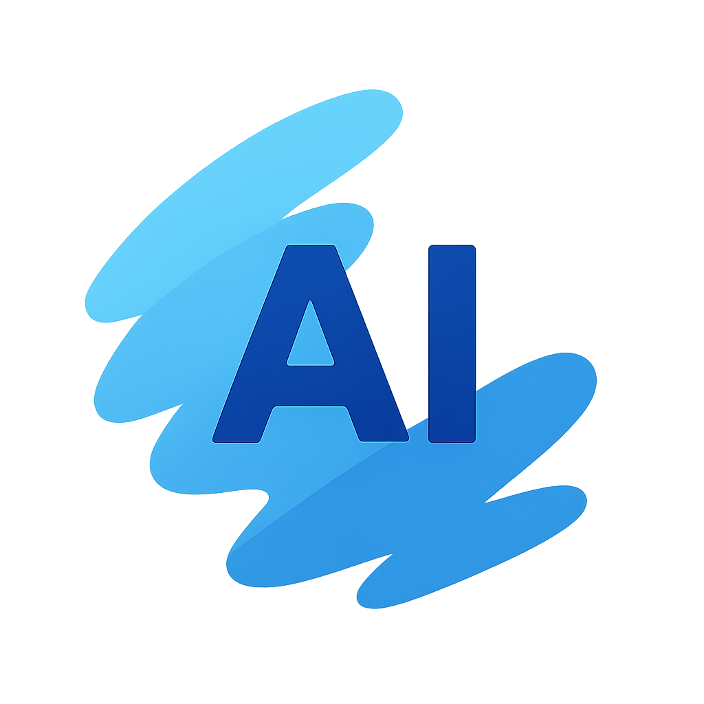
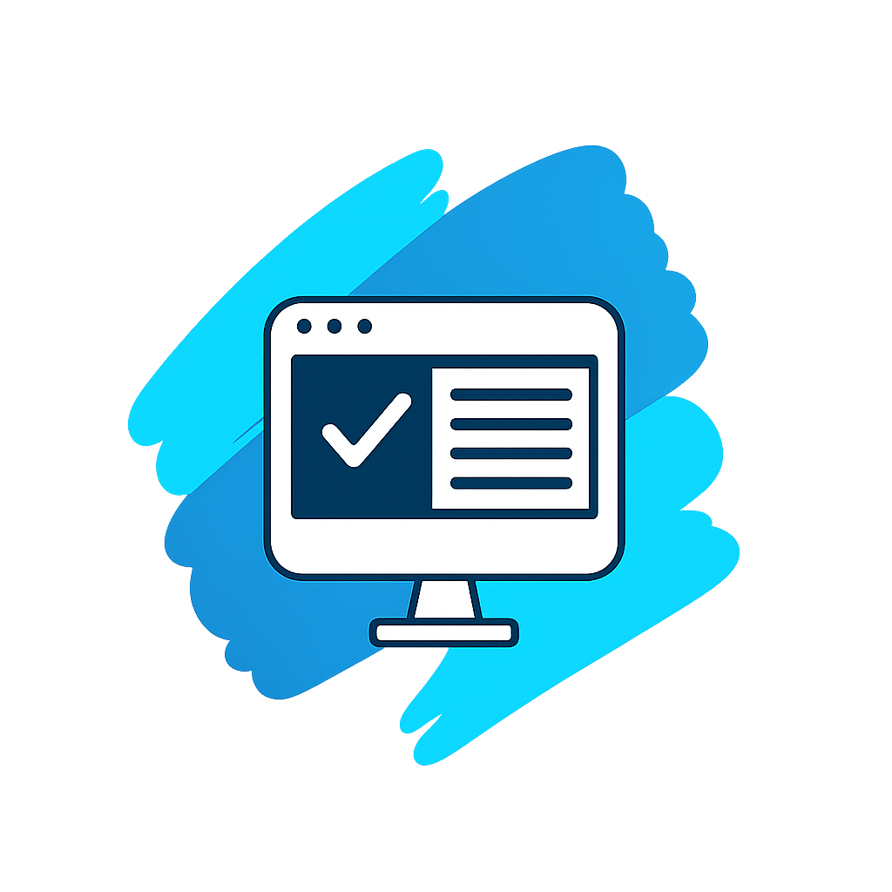
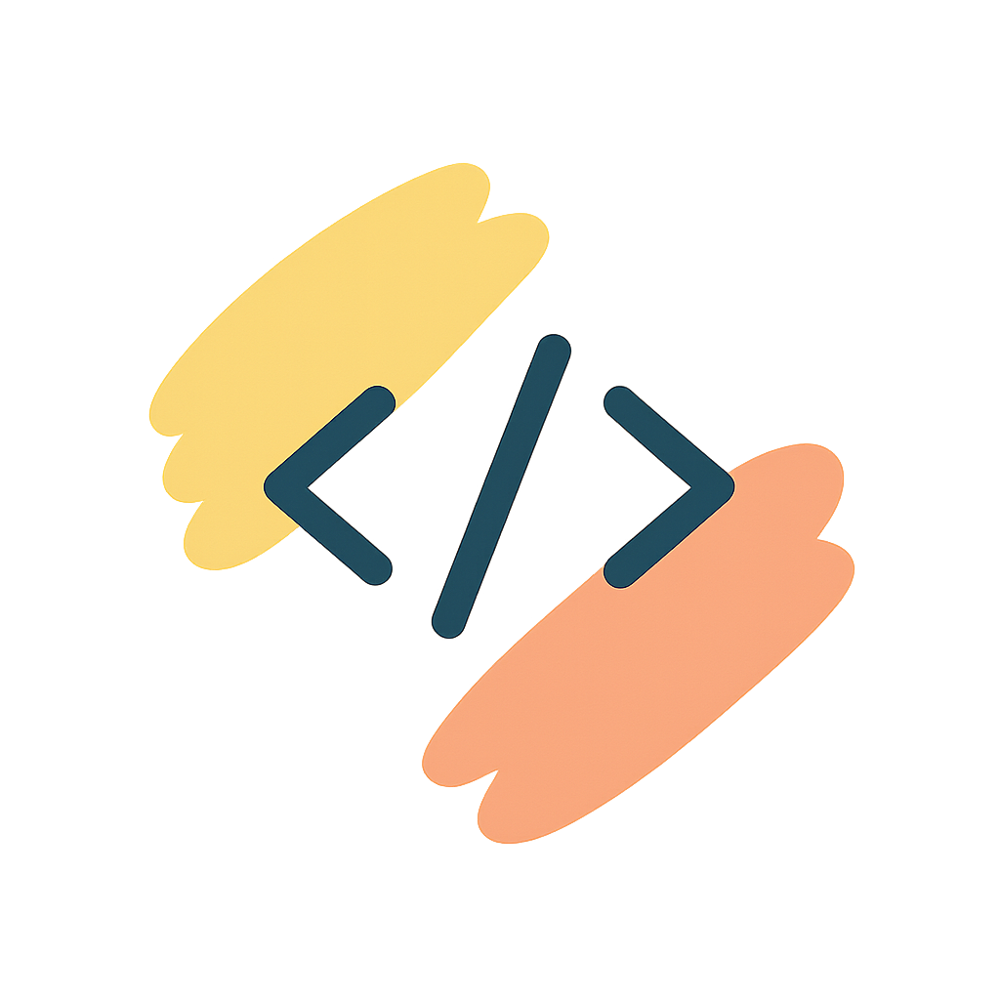

01 · Sobre
Engenharia sólida, IA útil e visão de produto
Tecnologia só gera valor quando resolve problemas reais com clareza, confiabilidade e uma experiência bem construída.
Engenharia de IA
Brasil
Construindo soluções para o mundo
Sou Especialista Sênior em Engenharia de IA e construo sistemas que permanecem simples para quem usa, mesmo quando são complexos por dentro.
Formação: Sou Técnico em Informática e curso Ciência da Computação, aprofundando conhecimentos em engenharia de software, estruturas de dados, inteligência artificial e arquitetura de sistemas distribuídos.
Experiência: Atuo há mais de 4 anos com ERP, integrações corporativas, comunicação em tempo real, plataformas web, automações e aplicação de inteligência artificial em processos de negócio.
Propósito: Transformar problemas complexos em soluções sustentáveis, performáticas e fáceis de evoluir, conectando produto, arquitetura, dados, experiência do usuário e estratégia.
Clareza
Performance
Segurança
Evolução
02 · Inteligência Artificial
IA integrada ao negócio, não isolada em uma demonstração
Construo soluções que conectam modelos, dados, ferramentas e sistemas corporativos para executar tarefas com contexto e segurança.
Agentes inteligentes
Agentes com instruções, ferramentas, memória, contexto e fluxos de execução integrados a processos corporativos.
RAG e contexto
Recuperação de informações, embeddings, reranking e organização de contexto para respostas mais relevantes e confiáveis.
Orquestração de LLMs
Integração de modelos, prompts, ferramentas, validações, observabilidade e estratégias de fallback em arquiteturas evolutivas.
IA aplicada ao ERP
Inteligência artificial conectada a cadastros, regras, interfaces, notificações e ações reais dentro do ecossistema empresarial.
03 · Soluções criadas
Produtos que conectam pessoas, processos, dados e inteligência
As imagens funcionam como elementos conceituais de apoio. O destaque está no problema resolvido, na solução construída e no impacto gerado.

01
Inteligência artificial
Agentes de IA para processos corporativos
Agentes configuráveis com contexto, ferramentas, ações, notificações e agendamentos para automatizar tarefas e apoiar decisões dentro do ERP.
Mais agilidade operacional e menos tarefas manuais repetitivas.
Assistência inteligente
Chat corporativo com inteligência artificial
Assistente com recuperação de informação, histórico, contexto de negócio e respostas personalizadas integrado à plataforma corporativa.
Informação mais acessível e atendimento interno mais rápido.
Atendimento omnichannel
Integração corporativa com WhatsApp
Atendimento, automações, templates, notificações e regras de negócio conectadas ao ERP e aos processos comerciais.
Comunicação centralizada e execução automática de processos.
Comunicação em tempo real
Chat interno corporativo
Comunicação entre departamentos com histórico, presença, notificações, reações e atualização em tempo real integrada ao ambiente empresarial.
Colaboração mais rápida sem retirar o usuário do sistema.
Data experience
Dashboards interativos
Visualização de indicadores em tempo real com painéis configuráveis, leitura objetiva e apoio à tomada de decisão.
Indicadores mais claros e decisões apoiadas por dados atuais.

06
Criação de conteúdo
Plataforma interna de sites
Editor visual com drag-and-drop para criação de páginas e microsites, reduzindo esforço técnico e acelerando publicações internas.
Mais autonomia para equipes e menor tempo de publicação.

07
Developer experience
Editor e IDE internos
Ambiente integrado para Java, frontend e banco de dados, com edição, execução, destaque de sintaxe e integração direta ao ERP.
Fluxo de desenvolvimento mais rápido e centralizado.
04 · Experiência
Construindo produtos que resolvem
Experiência prática em sistemas corporativos, integrações, automação, inteligência artificial e produtos digitais.
TECNICON
2021 — Atual
Especialista Sênior em Engenharia de IA
Desenvolvimento e evolução de soluções para ERP, integrações corporativas, comunicação em tempo real, automações, observabilidade e inteligência artificial.
- Arquitetura e implementação de serviços escaláveis.
- Criação de agentes e fluxos com inteligência artificial.
- Integração entre modelos, APIs, dados e sistemas corporativos.
- Interfaces e ferramentas orientadas à produtividade.
05 · Stack
Stack ampla, decisões conscientes
Ferramentas são meios. A arquitetura e a escolha correta para cada problema determinam a qualidade da solução.
Especialidade
Inteligência Artificial
- Agentes de IA
- RAG
- LangChain
- OpenAI
- LLaMA
- Embeddings
- Reranking
- Prompt engineering
Engenharia
Backend e arquitetura
- Java
- Python
- Golang
- REST
- gRPC
- Sistemas distribuídos
- Performance
Interface
Desenvolvimento web
- HTML5
- CSS
- JavaScript ES6+
- React.js
- UI responsiva
- Integração REST
Operação
Cloud e DevOps
- Docker
- Docker Swarm
- CI/CD
- Linux
- Bash
- Git
- Observabilidade
Dados
Bancos de dados
- PostgreSQL
- MySQL
- SQL Server
- Firebird
- Modelagem relacional
- SQL tuning
Confiabilidade
Qualidade e processos
- Testes automatizados
- TDD
- Code review
- Scrum
- Kanban
- ERP
06 · Contato
Vamos construir algo relevante?
Estou aberto a conexões, desafios e conversas sobre agentes de IA, automação, arquitetura de sistemas e produtos digitais.